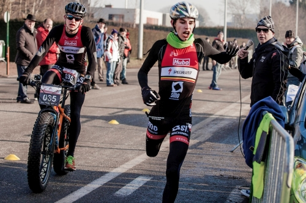

Het Triatlon Team Meetjesland organiseert zondag 20 januari 2019 de achtste editie van de 'Run & Bike'. De wedstrijd wordt georganiseerd aan het terrein van machinebouwer SMO, Nieuwendorpe 14 in Eeklo.
Er zijn aparte kinderreeksen volgens leeftijd en wedstrijden met verschillende afstanden voor jong en oud. Het evenement staat open voor iedereen, met een uitdagend parcours langs de jachthaven, de industriezone en het Schipdonkkanaal.
De eerste start wordt gegeven om 10.30 uur, voor de kids over 2 km met vaste wisselzones. De S-editie gaat over 5 km (1 ronde). De XL-editie (16km of 3 volledige rondes) start om 11 uur. In totaal kunnen max. 100 duo's deelnemen.
Stel je team samen met familie, vriendengroep of collega's! Momenteel zijn reeds meer dan 50 duo's geregistreerd. Info en inschrijvingen via www.smo-triatlonteam.be